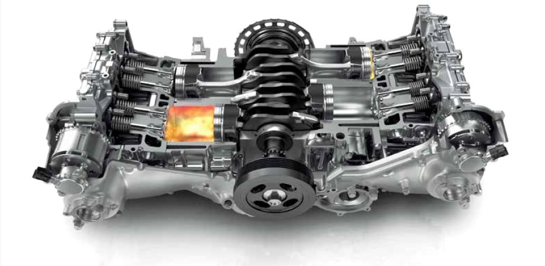
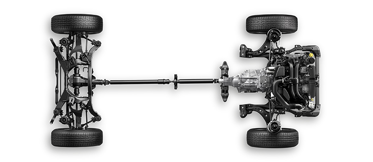

Subaru automobili

Subaru BOKSER DIESEL je prvi dizel motor na svetu sa horizontalno postavljenim protuhodnim cilindrima koji je konstruisan za ugradnju u putnička vozila. On ne samo da je zadržao prednosti tipičnog dizel motora, već nudi dodatno usavršene performanse koje je Subaru predvideo za ovu najnoviju konsktrukciju motora.

Simetrični pogon na sve točkove, koji se sastoji od uzdužno postavljenog SUBARU BOKESR motora i simetrično konstruisane pogonske grupe 4WD sistem je na koji se “Subaru” usredsredio u cilju najveće stabilnosti, sigurnosti i drumskih performansi. Ovo je najbolji pogon na svim točkovima koji se može naći na tržištu.